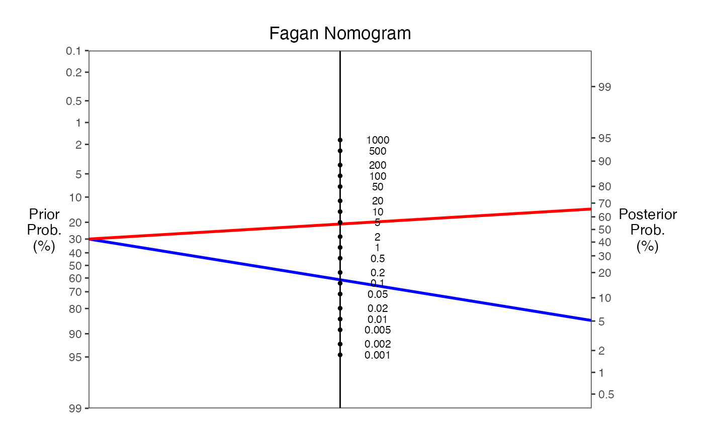
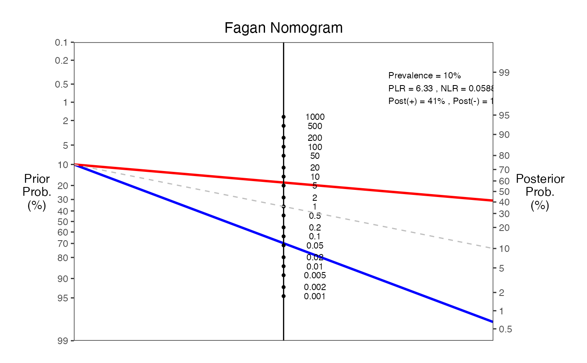
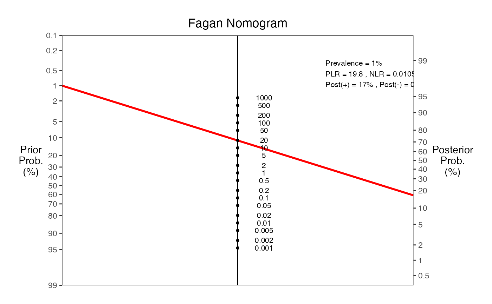
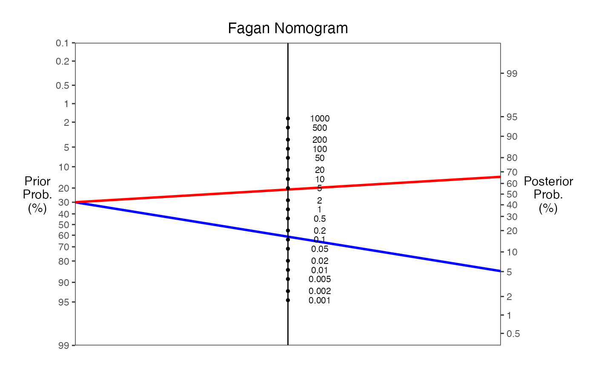
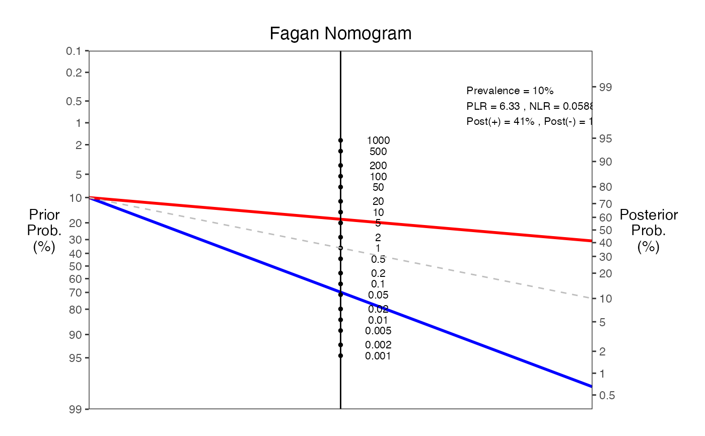
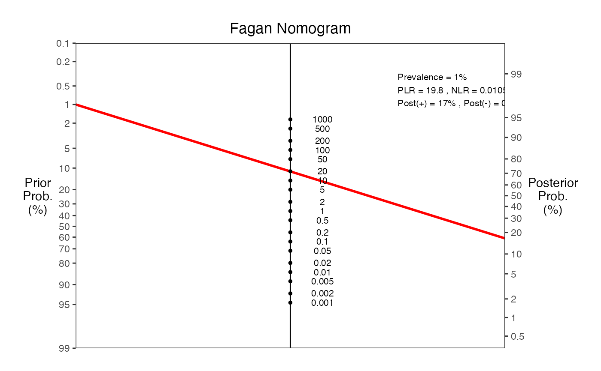

Creates Fagan nomograms for Bayesian analysis in diagnostic testing. A Fagan nomogram is a graphical tool used to estimate post-test probabilities from pre-test probabilities and likelihood ratios. This function supports input via sensitivity/specificity or directly via likelihood ratios.
Usage
nomogrammer(
Prevalence,
Sens = NULL,
Spec = NULL,
Plr = NULL,
Nlr = NULL,
Detail = FALSE,
NullLine = FALSE,
LabelSize = (14/5),
Verbose = FALSE
)Arguments
- Prevalence
Prior probability (prevalence) as a number between 0 and 1. This represents the probability of disease before the test is performed.
- Sens
Model sensitivity as a number between 0 and 1. The probability that the test is positive when the disease is present. Optional if Plr/Nlr provided.
- Spec
Model specificity as a number between 0 and 1. The probability that the test is negative when the disease is absent. Optional if Plr/Nlr provided.
- Plr
Positive likelihood ratio (calculated from Sens and Spec if not provided). Must be >= 1. If provided along with Nlr, takes precedence over Sens/Spec.
- Nlr
Negative likelihood ratio (calculated from Sens and Spec if not provided). Must be between 0 and 1. If provided along with Plr, takes precedence over Sens/Spec.
- Detail
Logical. If TRUE, overlays key statistics (prevalence, likelihood ratios, posterior probabilities) onto the plot.
- NullLine
Logical. If TRUE, adds a reference line from prior probability through LR = 1 to illustrate an uninformative test.
- LabelSize
Numeric. Controls the size of text labels on the plot. Default is 14/5 ≈ 2.8.
- Verbose
Logical. If TRUE, prints diagnostic metrics to the console.
Value
A ggplot2 object containing the Fagan nomogram. The plot shows:
Left axis: Prior probability (prevalence) as percentages
Middle axis: Likelihood ratios
Right axis: Posterior probability as percentages
Red line: Positive test pathway
Blue line: Negative test pathway
Details
The Fagan nomogram visually represents Bayes' theorem for diagnostic testing:
$$Post-test odds = Pre-test odds × Likelihood ratio$$
The function accepts either:
Sensitivity and Specificity (traditional approach)
Positive and Negative Likelihood Ratios (direct approach)
If both are provided, sensitivity/specificity take precedence and a warning is issued.
Mathematical relationships:
PLR = Sensitivity / (1 - Specificity)
NLR = (1 - Sensitivity) / Specificity
When calculating from LRs: Specificity = (PLR - 1) / (PLR - NLR)
When calculating from LRs: Sensitivity = PLR × (1 - Specificity)
Post-test probability (+) = (Prevalence × PLR) / ((Prevalence × PLR) + (1 - Prevalence))
Post-test probability (-) = (Prevalence × NLR) / ((Prevalence × NLR) + (1 - Prevalence))
Note
This function is used internally by the decision analysis in
the ClinicoPath jamovi module for generating Fagan nomograms.
References
Fagan TJ. Letter: Nomogram for Bayes theorem. N Engl J Med. 1975;293(5):257.
Based on Perl web-implementation: https://araw.mede.uic.edu/cgi-bin/testcalc.pl Authors: A.M. Chekroud & A. Schwartz, December 2016
See also
decision, decisioncalculator for related diagnostic test functions
Examples
# Example 1: Using sensitivity and specificity
nomogrammer(Prevalence = 0.3, Sens = 0.9, Spec = 0.8)
 # Example 2: Using likelihood ratios directly
nomogrammer(Prevalence = 0.3, Plr = 4.5, Nlr = 0.125)

# Example 3: With detailed annotations and null line
nomogrammer(Prevalence = 0.1, Sens = 0.95, Spec = 0.85,
Detail = TRUE, NullLine = TRUE, Verbose = TRUE)
#>
#> === Fagan Nomogram Results ===
#> Prevalence = 10%
#> Sensitivity = 95%
#> Specificity = 85%
#> Positive LR = 6.33
#> Negative LR = 0.0588
#> Post-test probability (positive test) = 41%
#> Post-test probability (negative test) = 1%
#> ===============================

# Example 4: Low prevalence scenario (screening test)
nomogrammer(Prevalence = 0.01, Sens = 0.99, Spec = 0.95, Detail = TRUE)
#> Warning: Removed 1 row containing missing values or values outside the scale range
#> (`geom_line()`).

# Example 2: Using likelihood ratios directly
nomogrammer(Prevalence = 0.3, Plr = 4.5, Nlr = 0.125)

# Example 3: With detailed annotations and null line
nomogrammer(Prevalence = 0.1, Sens = 0.95, Spec = 0.85,
Detail = TRUE, NullLine = TRUE, Verbose = TRUE)
#>
#> === Fagan Nomogram Results ===
#> Prevalence = 10%
#> Sensitivity = 95%
#> Specificity = 85%
#> Positive LR = 6.33
#> Negative LR = 0.0588
#> Post-test probability (positive test) = 41%
#> Post-test probability (negative test) = 1%
#> ===============================

# Example 4: Low prevalence scenario (screening test)
nomogrammer(Prevalence = 0.01, Sens = 0.99, Spec = 0.95, Detail = TRUE)
#> Warning: Removed 1 row containing missing values or values outside the scale range
#> (`geom_line()`).
